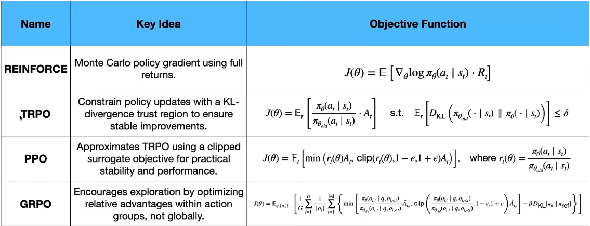

When computing labs release new foundation models, people often focus on the large GPU clusters and the pre-training phase. While pre-training teaches the model language structure and world knowledge, post-training is what turns it from a raw text predictor into a usable, instruction-following assistant.
In this post, we will dive into data preparation, Supervised Fine-Tuning (SFT), Reward Modeling, environments, and the evaluation required to deploy an LLM.
Quick Glossary of Terms
- Activation Function: A mathematical gate applied after a neural network layer’s linear computation. Without activations, stacking many layers would still collapse into one linear transformation, which means the model could not learn complex patterns. Activations introduce non linearity, allowing the network to represent richer behaviors such as pattern matching, abstraction, and conditional reasoning.
- Value Function: The value function estimates how much future reward the current state or partial trajectory is likely to produce. In PPO, this is learned by a separate critic model that helps reduce noisy updates.
- Policy: In reinforcement learning, the policy is simply the LLM itself. It is the set of rules (the neural network's weights) that dictate what action (next token) the agent will take given a specific state (the prompt).
- Trajectory: A trajectory is the full sequence of generated tokens, or a multi-step execution path inside a simulated environment.
- Epoch: One complete pass through the entire training dataset. In post-training, you typically train for very few epochs (often just 1 to 3) to prevent the model from overfitting and blindly memorizing the data.
- KL Divergence: A mathematical measurement of how much a model's current output distribution differs from an older foundation model. It acts as a heavy penalty to keep the RL model anchored to sanity so it doesn't drift into generating gibberish just to "game" the reward system.
- Fisher Information Matrix: An array of second-order derivatives used to safely bound parameter updates in algorithms like TRPO.
1. Data Preparation & Synthetic Data Generation
The foundation of post-training is data. You cannot align a model without high-quality examples of what "good" behavior looks like. Historically, this meant hiring thousands of human annotators. Today, the meta has heavily shifted toward synthetic data generation using frontier models.
Scenario / Dataset Design
Turning a complex research problem into actionable training data requires formulating the capability into a structured taxonomy. If you simply ask GPT-4, "Generate 100 Python coding problems," you get a generic, useless dataset. Instead, you must engage in strict Scenario Design. You prompt the frontier model to create highly specific constraints: e.g., "Create a Python script that fails because of a deeply nested circular import, then simulate a terminal traceback, then write the thought process fixing it." This ensures your dataset covers the long-tail edge-cases the target model actually needs to learn.
Rubric Design
A Rubric is a set of grading criteria. How do you design a good rubric? You must define independent grading dimensions: conciseness, safety, logical soundness, formatting constraints, and instruction-following constraint checks. A strong rubric ensures that diverse tasks are defined, penalizing repetitive or lazy completions. This filters for high-variance, high-quality data, which helps the target model learn the exact desired behaviors during training rather than mimicking a generic AI "tone". High-quality rubric design is the difference between a capable reasoning model and a babbling one.
Example: A Production-Grade Rubric
Instead of a binary pass/fail, a strict rubric contains exact JSON criteria. For example, if we are training a coding assistant, the rubric might look like this:
- Dimension 1:
Formatting (0-1) - Does the output follow the
<think> ... </think>XML formatting before delivering the final code? - Dimension 2:
Conciseness (0-5) - Deduct 2 points if the model apologizes (e.g., "I'm sorry,
returning the code now"). Deduct 3 points if the model explains basic concepts the user
didn't ask for (e.g., explaining what a
forloop is). - Dimension 3: Logic Pass Rate (0-5) - 5 points if the code uses optimal O(n) time complexity. 1 point if it defaults to a naive O(n²) nested loop.
- Dimension 4: Safety (0-1) - Does the code include hardcoded secrets or execute arbitrary user-provided bash scripts?
By varying these dimensions, you create diverse behaviors the model learns.
Data Quality: LLM-as-a-Judge
Once you have generated synthetic data against your scenarios, you need a scalable data quality filter to prevent garbage from entering your SFT pipeline. This is where LLM-as-a-Judge comes in. (For a deeper dive into crafting rubrics and alignment prompts, check out LLM as a Judge.)
2. Supervised Fine-Tuning (SFT) & Optimization
SFT is the process of behavior cloning. The base model is trained on your synthetic dataset to learn the exact formatting and tone expected of an assistant.
Parameter Fine-Tuning with TRL
Training an LLM requires heavily abstracted, highly optimized loops. The industry standard is Hugging
Face's TRL (Transformers Reinforcement Learning) library. Parameter fine-tuning
using TRL's SFTTrainer abstracts away the complex batching of large context windows,
gradient accumulation, and learning rate scheduling necessary to prevent forgetting.
Optimization: LoRA and Quantization
Full-parameter fine-tuning of a 70-billion parameter model is computationally prohibitive for most teams. To solve this, we use the following two parameter-efficient fine-tuning (PEFT) strategies:
- LoRA (Low-Rank Adaptation): Instead of updating billions of parameters, you freeze the base model and inject small, trainable rank-decomposition matrices into the self-attention layers. This cuts memory requirements.
- Quantization (QLoRA): To further save VRAM, the frozen base model weights are mathematically downcast from 16-bit to 8-bit or 4-bit precision, allowing you to fine-tune large models on a single consumer GPU.
The Tooling Ecosystem
To achieve maximum throughput, many rely on Unsloth. Unsloth rewrites the Triton kernels for backpropagation, making mathematically identical LoRA training 2x to 5x faster while slicing VRAM usage. When conducting large-scale evals or synthetic generation, vLLM (using PagedAttention) handles the extreme batch-processing demands of inference.
3. High-Fidelity Environments
Before advancing to reinforcement alignment, you need an environment to test the model's actions in real-time. A high-fidelity environment is a deterministic, simulated space where an AI agent can execute complex and diverse actions exactly as it would in production.
Creating this environment requires total observability over every action and state.
If the model executes a bash command, the environment must capture the exact
stdout/stderr, track filesystem deltas, monitor memory usage, and inject that state
back into the model's prompt. Without a high-fidelity environment capable of running actual
pip installs or launching headless browsers, your agent is hallucinating code,
not executing it.
4. Reward Models & Preference Alignment
SFT alone isn't enough; models often need reinforcement to navigate complex multi-step reasoning trees. To achieve RL alignment, you must understand the interplay of three distinct models:
- Reference Model (Base SFT): We freeze this model to calculate a KL-divergence penalty. This ensures our newly trained model doesn't drift into absolute gibberish just to "game" the reward system.
- Reward Model: A separate classifier that scores the model's output.
- Training Model (Policy Model): The model being updated via gradient descent.
Training a Reward Model
To build a reward model, you take your trained SFT model and replace its "language modeling head" (the neural network layer that outputs probabilities over a 128k-word vocabulary) with a regression head—a single-neuron output layer that compresses the model's understanding of the text into one numeric number.
How does it actually learn what "good" vs "bad" is? You feed the Reward Model a large
dataset of preference pairs: a Prompt and two completed answers,
Response A and Response B, where a judge (human or LLM) has
indicated A > B. If the model is totally untrained, it might read A and output a score of 2.1,
and read B and output a score of 4.8. Since A is the preferred response, the model is currently
failing in its predictions. The system applies a Pairwise Ranking Loss (like the
Bradley-Terry model), which mathematically forces the backpropagation of gradients to adjust the
internal weights of the neural network so that the score for A goes up, and the score for B
goes down. Over millions of text pairs, the Reward Model deeply internalizes the nuances of
conciseness, formatting, and logic, by learning to maximize the numerical margin
between preferred and rejected text.
Here is a workflow using Hugging Face's TRL library:
- Data Formatting: You construct a Hugging Face
Dataset containing two specific columns:
chosenandrejected. Both columns must contain the fully formatted multi-turn conversation (the system prompt, user prompt, and the respective assistant response). - Model Initialization: In your Python script,
instead of loading the model with standard generation weights
(
AutoModelForCausalLM), you load your SFT weights usingAutoModelForSequenceClassification.from_pretrained(..., num_labels=1). Passing the argumentnum_labels=1is what strips the language generating head and attaches the single-neuron regression head. - The Training Loop: You instantiate TRL's
RewardTrainerclass and pass it your dataset and initialized model. Under the hood, the trainer class automatically tokenizes both thechosenandrejectedtexts, passes them independently through the LLM, extracts the final scalar prediction (logit), dynamically calculates the Bradley-Terry pairwise ranking loss between the two, and executes the backpropagation step to update the model.
The Two Strategies: RLHF vs DPO
Once your environment and data are ready, there are two different strategies to align the policy: RLHF (Reinforcement Learning from Human Feedback) and DPO (Direct Preference Optimization).
DPO bypasses the Reward Model during the training step. It maps
preference pairs directly into the language modeling loss function, increasing the probability of
the preferred response and heavily penalizing the rejected one.
When to use DPO: Use
DPO when you are constrained by GPU VRAM and don't require advanced reasoning capabilities. It folds
alignment into supervised training without the instability of multi-model RL.
RLHF, conversely, relies on exploring the environment and updating weights based on a scalar reward. Because RL actively explores new trajectories rather than just mimicking static data, it is widely considered to yield higher capability ceilings for multi-step reasoning, math, and coding.
Different RL Algorithms:

-
1. TRPO (Trust Region Policy Optimization)
TRPO restricts how much the policy can change in a single update using a mathematical constraint on the KL divergence. It calculates second-order derivatives (using the Fisher Information Matrix) to guarantee the new model stays within a safe "trust region" of the old model, ensuring stable improvement
When to use: Rarely used for LLMs today. The second-order math is computationally brutal and far too slow for models containing billions of parameters.
-
2. PPO (Proximal Policy Optimization)
PPO is the industry standard powering models like ChatGPT. It abandons the computationally expensive strict math of TRPO in favor of an efficient first-order derivatives. To maintain training stability and estimate future rewards, it requires running a separate "Value Model" (the Critic) alongside the active policy.
The primary innovation of PPO lies in its "clipping" objective function. Without any constraints, a gradient update formula scales the advantage by the probability ratio:
L(θ) = E[rt(θ)At]With clipping, PPO prevents the policy from changing too much from its prior state:
LPPO(θ) = E[min(rt(θ)At, clip(rt(θ), 1−ϵ, 1+ϵ)At)]Here, rt(θ) is the ratio of new versus old policy probabilities, and At is the advantage, i.e., how much better this specific action is than expected. The clip range ϵ strictly controls the update size. PPO improves the policy when the new response is better, but caps the update if it moves too far from the previous model.
However, optimizing strictly for reward is dangerous. If left unconstrained, the policy will quickly discover edge cases where it can "game" the reward model without actually improving quality, a classic phenomenon known as reward hacking. To counter this, PPO introduces a penalty based on KL Divergence:
L = LPPO − β DKL(πθ ∥ πref)L is the final objective function, LPPO is the reward output, and DKL(πθ ∥ πref) is the KL divergence between the new policy and the reference policy.
In this objective, the reward term pushes the model toward preferred outputs, while the KL penalty acts as an elastic band, pulling it back toward the original SFT behavior. The coefficient β dictates the strength of that penalty. Token by token, the model produces a probability distribution. If the model starts outputting unusual or low-quality tokens just because they trick the reward model, the KL divergence will spike, safely reducing the gradient update that caused the shift.
This penalty is vital because reward models are trained on finite preference data and have blind spots. It prevents reward hacking, preserves the core language intuition and grammar built during pre-training, and acts as a regularizer to stabilize the otherwise high variance of RL updates. However, getting this balance right is difficult. If the penalty is too strong (high β), the model suffers from alignment inertia, it barely deviates from the SFT baseline and reward improvements stall. If it is too weak (low β), the model drifts rapidly, producing responses that are brittle, verbose, or unnatural just to exploit the rubric. Without proper KL balancing, you commonly see a length bias, where the model learns to inflate word count because the reward model correlates verbosity with quality.
To mitigate these issues, standard practice now involves Adaptive KL control. Instead of a constant coefficient, teams dynamically adjust it: increasing β if KL grows too large, and dropping β if the model starts stalling on reward improvements.
-
3. GRPO (Group Relative Policy Optimization)
GRPO is the algorithm powering models like DeepSeek-R1. PPO’s biggest flaw is the memory footprint of the Value Model. GRPO completely eliminates the Value Model by ranking responses relative to each other within a batch. Instead, it generates a group of 4 to 8 responses for the exact same prompt, scores all of them with the Reward Model, and normalizes the scores relative to each other (e.g., using z-scores). Good responses in the group get positive advantages, bad ones get negative advantages.
Ai = (ri − μ) / σ- ri: reward for response i
- μ, σ: mean and standard deviation over the generated group
PPO vs GRPO

While both algorithms optimize the policy based on rewards, their fundamental difference lies in memory architecture. PPO requires four models loaded in memory simultaneously (Actor, Critic, Reward, and Reference), creating the "RLHF VRAM Wall." GRPO sidesteps this by eliminating the Critic model entirely, instead generating a group of responses and substituting the Critic's baseline with the statistical average of that group.
Constraints & Trade-offs:
PPO provides mathematical stability due to its dedicated value model, resulting in smoother gradients and reliable convergence, but at the cost of massive infrastructure demands. GRPO drastically cuts VRAM requirements and enables training on consumer hardware, but relies heavily on the quality of its sampled groups and can experience higher variance during optimization.
When to use which?
Use PPO for general-purpose instruct tuning when your GPU cluster is large enough, as the separate value function yields a safer, smoother optimization trajectory. Use GRPO when memory efficiency is the hard bottleneck or when you are training a "Reasoning Model" where the reward function is based on purely verifiable math/code constraints. In those environments, the ability to generate multiple diverse paths and compare them directly is powerful while significantly cutting VRAM requirements.
5. Evaluation & Benchmarks
Evaluation is the systematic process of scoring a model's capabilities across varied, unseen prompts. This step is critical because fine-tuning risks catastrophic forgetting, a scenario where a model successfully masters a new behavioral constraint but loses its underlying reasoning or coding capabilities. Without rigorous evaluation, you are flying blind. Standardized benchmarks provide the rigid tests necessary to prove your model is actually adapting rather than just memorizing its SFT data, and they empirically dictate exactly what new synthetic examples must be generated in the next training cycle to fix newly discovered blind spots.
(For a deeper dive into the evaluation strategies, check out LLM Evaluation.)